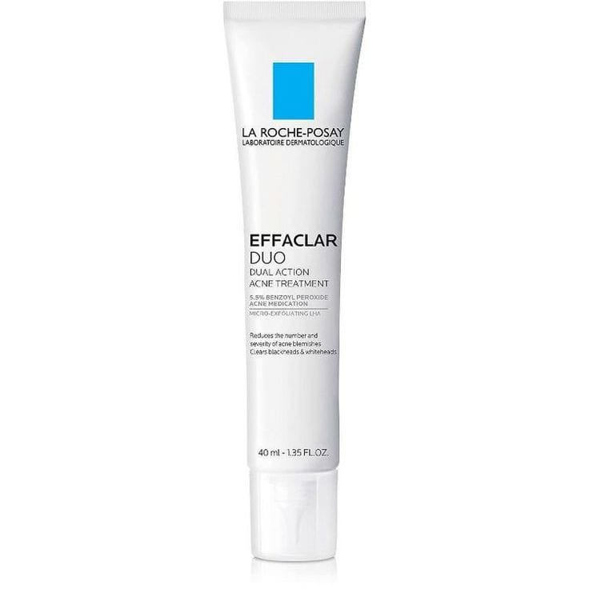

EFFACLAR K (+) TRATAMIENTO RENOVADOR
REVOK B77 Just Daily Sun Shield / 40ML
La Roche Posay Crema Facial

EFFACLAR K (+) TRATAMIENTO RENOVADOR
Es una crema protectora solar diseñada para brindar una defensa efectiva contra los daños causados por los rayos UV. Su fórmula está diseñada para ser ligera, no comedogénica y adecuada para el uso diario.
Es más que un simple bloqueador solar; es un producto diseñado para cuidar y proteger la piel de manera efectiva, promoviendo la salud cutánea a largo plazo.
Beneficios
*Apto para pieles grasas
*Antienvejecimiento
*Protege la piel
*Hidrata
*Ligereza
¿Cómo aplicarlo?
" 1 "

Limpieza:
Antes de aplicar cualquier producto, asegúrate de que tu piel esté limpia. Usa un limpiador suave adecuado para tu tipo de piel.
" 2 "
Hidratación:
Aplica tu crema hidratante habitual si lo deseas.
" 3 "

Aplicación:
Aplica una cantidad generosa de REVOK B77 Just Daily Sun Shield uniformemente sobre el rostro y otras áreas expuestas de la piel.
" 4 "
Reaplicación:
Es recomendable reaplicar cada 2 horas, especialmente si estás al aire libre o sudando.
EFFACLAR K (+) TRATAMIENTO RENOVADOR
Es un protector solar que busca ofrecer una defensa integral contra la radiación solar. Este tipo de producto es esencial en cualquier rutina de cuidado de la piel, ya que la exposición al sol puede causar diversos problemas cutáneos, incluyendo envejecimiento prematuro, manchas y, en casos más graves, cáncer de piel.
Además de su función protectora, este tipo de crema a menudo incluye ingredientes que aportan hidratación y mejoran la textura de la piel, asegurando que no solo se proteja, sino que también se mantenga saludable y radiante.
Beauty Tips
Para mantener la eficacia del producto, es crucial reaplicarlo cada dos horas, especialmente si se está expuesto al sol.
Ingredientes
Filtros solares: (como óxido de zinc o dióxido de titanio) que protegen de los rayos UVA y UVB.
Antioxidantes: (como vitamina E o extractos de plantas) que ayudan a combatir el daño oxidativo.
Hidratantes: (como glicerina o ácido hialurónico) que mantienen la piel hidratada.